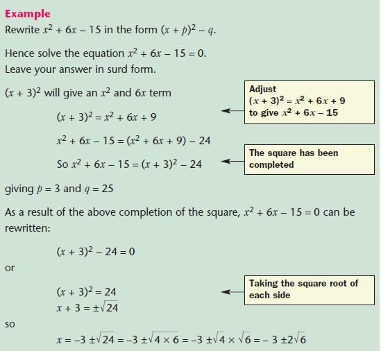

Welcome To i-Learning Math
Notes
Chapter 2: Quadratic Expressions and Equations
A quadratic expression in the form ax2+bx+c,where a,b and c are constants,a≠0 and × is an unknown.
The multiplication process is known as expansion
Factorising quadratic expressions of the form ax2 + bx + c,where b =0 or c =01.When b = 0, ax2 + c can be factorised by finding the highest common factor (HCF) of the coefficients a and c.
Factorising quadratic expressions of the form px2 - q,where p and q are perfect squaresLet p = a² and q = b²
Factorising quadratic expressions of the form ax2 + bx + c, where a ≠ 0, b ≠ 0 and c ≠ 0
Factorize
